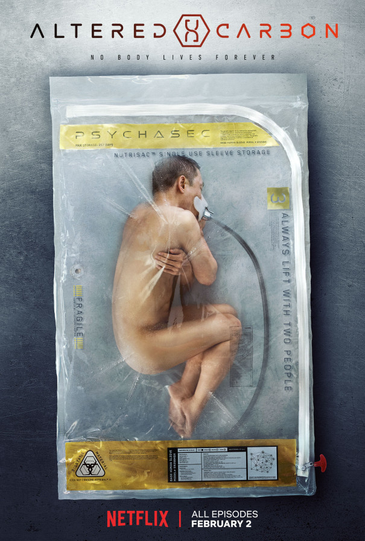

|

|
Altered CarbonIMDB Rating - 8.1Rotten Tomatoes 76% Seasons - 2 Created by- Jeff Russo |
The series takes place over 360 years in the future, with most episodes the first season set in the year 2384, in a futuristic metropolis known as Bay City. In the future, a person's memories and consciousness are written onto a disk-shaped device called a cortical stack, which is implanted in the vertebrae at the back of the neck. These storage devices are of alien design and have been reverse engineered and mass-produced but can only be made from the material on Harlan's world. Physical human or synthetic bodies are called "sleeves" and stacks can be transferred to new bodies after death, but a person can still be killed if their stack is destroyed and there is no backup. While this means anyone can live forever, only the wealthiest, known as "Meths" in reference to Methuselah, have the means to change bodies through clones and remote storage of their consciousness in satellites, so they never have to die of old age before being resleeved.
Takeshi Kovacs, a political operative with mercenary skills, is the sole surviving soldier of the Envoys, a rebel group defeated in an uprising against the new world order. In the first season, set 250 years after the Envoys are destroyed, his stack is pulled out of prison by 300-year-old Meth Laurens Bancroft, one of the wealthiest men in the settled worlds. Bancroft offers him the chance to solve a murder—Bancroft's own—to get a new shot at life. In the second season, set 30 years later, Kovacs, now in a new sleeve, continues to search for his lost love and Envoy leader Quellcrist Falconer.